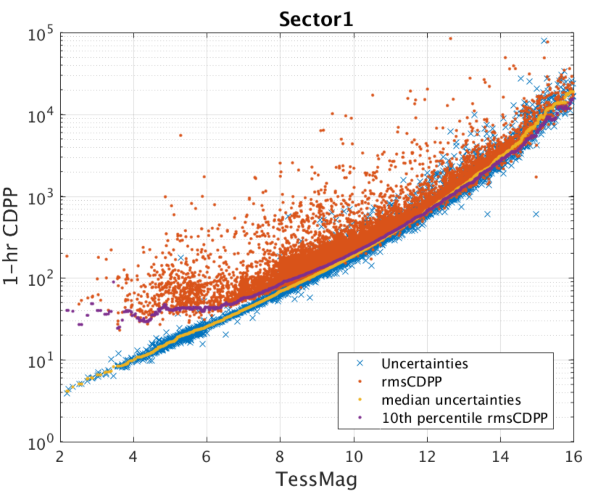
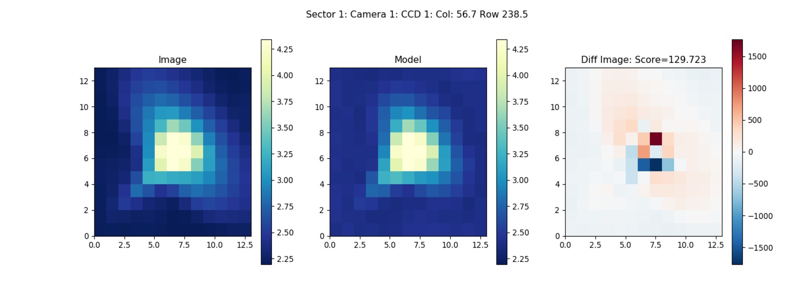

The TESS mission provides the community with an opportunity to make ground-breaking discoveries in the field of exoplanets, astrophysics and planetary science. A summary of the technical details that proposers should be aware of can be found here.
A description of the overall mission can be found in Ricker et al. 2015. Brief descriptions of the mission operations, including the TESS orbit, field-of-view, time-sampling, and observing strategy, can be found on the objectives and primary mission pages.
This website as well as the TESS Instrument Handbook and Data Release Notes should be consulted for the latest information regarding observing with TESS.
Photometric performance
Here we outline some of the unusual characteristics of the TESS data in addition to major sources of noise, and systematic effects. Several of the noise and systematics may be corrected for within the data processing pipeline, but residual effect may still be present within the user data files, it is therefore important to identify these issue and try to resolve them.
Additional information on all systematics effects not identified here can be found within sections 6, 7, and 8 of the TESS Instrument Handbook.
Typical noise levels
The figure below shows the 1-hour Combined Differential Photometric Precision (CDPP) from TESS Sector 1. The red points are the RMS CDPP measurements for the 15,889 light curves from Sector 1 plotted as a function of TESS magnitude. The blue x's are the uncertainties, scaled to a 1-hour timescale. The purple curve is a moving 10th percentile of the RMS CDPP measurements, and the gold curve is a moving median of the 1-hour uncertainties. The photometric uncertainties are dominated by pointing jitter, but the best light curves are well below the mission requirements of (1) a systematic error floor at 60 ppm and (2) an achieved CDPP at 10th magnitude of 230 ppm, which is sufficient to detect super-Earths around bright stars. For fainter stars around Tmag = 16, the photometric precision drops to about 1%, which is still sufficient for many astrophysical studies such as supernovae and stellar variability.
The typical noise achieved in each individual TESS sector is described in the Data Release Notes for each sector.

Saturation
The TESS Instrument Handbook and Data Release Notes should be consulted for the latest information regarding observing saturated stars with TESS.
The amount of charge deposited by a star of magnitude m into the peak pixel depends on the fraction of the total charge in the peak pixel: this value generally ranges from 0.2 to 0.4 in the TESS images. The TESS cameras create 15,000 e−/s for a star of m = 10: thus, a star of m = 5 will create 3 × 106 electrons in a two-second exposure. For a flux fraction of 0.3, the charge in the peak pixel is 9 × 105 e−, leading to a bloom length of 5 rows; similarly, a star of m = 2.5 will create a bloom of 50 rows. A key feature of the CCID-80 CCDs used on TESS is their ability to conserve charge even from very saturated stars. Pre-launch ground tests showed that charge will be conserved for stars at least as bright as 4th magnitude. Measurements of charge conservation using flight data are in progress.
Saturation is anticipated in the central pixel at IC = 7.5. This, however, does not represent the bright limit for precise photometry. Excess charge from saturated pixels is conserved and spread across adjacent pixels in a CCD column until the excess reaches a CCD boundary. This leads to "bleed trails" extending above and below a saturated pixel, similar to what is seen for bright stars in Kepler/K2 photometry. Precision photometry can still be achieved by creating a photometric aperture that is large enough to encompass all excess charge. The TESS bright limit is anticipated to be IC=4.
Point Spread Function
TESS was designed as a high precision photometer and not as an imager, as such the photometric stability and minimization of noise was more important than a compact point spread function (PSF).
The TESS PSF varies significantly across the focal plane due primarily to the optics. Instead of a PSF, TESS has a pixel response function (PRF), which represents the observed appearance of the point sources.
The TESS PRF was created by the SPOC by fitting to micro-dithered data taken during PRF commissioning exercises. PRF models for sectors 1-3 can be found here, with sector 4 onwards here. Additional resources for the TESS PRF can be found on MAST.

PRF from Sector 1, Camera 1.
Physical WCS solutions can be used to convert the PRF image coordinates into the corresponding TESS CCD's. For more information about the TESS PRF see page 49 of the instrument handbook.
Given the unusual nature of the TESS PRF, photometry of an object is typically obtained through the summation of all pixels within a given region. This region is referred to as an "aperture mask" and can be determined through the pipeline or can be selected by the user, unlike typical apertures, TESS apertures are not circular.
Crowding
Because the TESS pixels are large (21 arcsec), the TESS photometry for many targets will be contaminated by nearby objects. One of the goals of the TIC is to provide the information needed to estimate the contamination in the TESS band. This cannot be determined accurately ahead of time because it will depend on the pixels selected for the aperture photometry of each target and the exact position of the target in the aperture. However, it is possible for the TIC to provide some guidance concerning the level of expected contamination, for example by providing the number of known objects and their total brightness in the TESS band for some suitable standard aperture and photometer Pixel Response Function (PRF).
Pointing jitter
A key source of systematic noise comes from random pointing variations i.e., spacecraft jitter. This causes changes in the measured brightness as stars move across CCD pixels. The floor for this intrinsic noise is assumed to be 60 ppm on hourly timescales.
Scattered light
Each camera has a lens hood to reduce the scattered light from the Earth and the Moon. Due to TESS's wide field of view and the physical restrictions of the Sun shade the lens hood is not 100% efficient. The effect of the scattered light on the CCD's can be seen in the video below, typically the patchy brightness is 2-6 times that of the nominal sky background and covers approximately 10-15% of the FoV. When the Earth is below the level of the sun shade there is no scattered light. When the Earth or Moon is directly in the FoV of a camera the data is no longer viable.
A movie of how scattered light hits the CCD's in sector 19.
For more information about scattered light see section 7.3 of the instrument handbook
Cosmic rays
Cosmic-ray hits on the TESS CCD's are a significant source of noise. For FFIs this is especially true and nearly half of the pixels in the 30 min FFIs are affected. Within the DHU a tools was developed to help mitigate the effect of the Cosmic-rays, images are stacked and pixels are examined in groups of N. The highest and lowest values of the stack are removed, and the remaining sum are used to create the stack. Although this method of cosmic-ray rejection reduces contamination by a factor of 100, some low level outliers still exist and can be seen within the data. These outliers can however be removed via TESS-zap.
For more information about cosmic-ray mitigation please see section 5.1 of the [instrument handbook] (https://archive.stsci.edu/files/live/sites/mast/files/home/missions-and-data/active-missions/tess/_documents/TESS_Instrument_Handbook_v0.1.pdf).
Note that for the 20 second cadenced data produced in Cycles 3+, cosmic-ray mitigation is turned off.